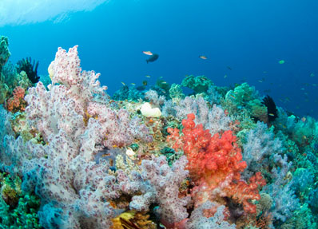

01
People first
Plans begin with your pace, needs, and sense of adventure.
About Travlr
Travlr Getaways brings stays, meals, and local experiences into one clear plan - then leaves the rest of the day open.

Our approach
We believe a memorable trip needs a strong starting point, not a minute-by-minute schedule. Our team pairs reliable lodging with small-scale experiences and practical advice from people who know the coast.
That means fewer transfers, thoughtful timing, and options that suit real comfort levels. It also means being honest when the weather changes the plan.
What guides us
01
Plans begin with your pace, needs, and sense of adventure.
02
Local voices and seasonal conditions shape every recommendation.
03
Useful details and honest expectations make the journey easier.